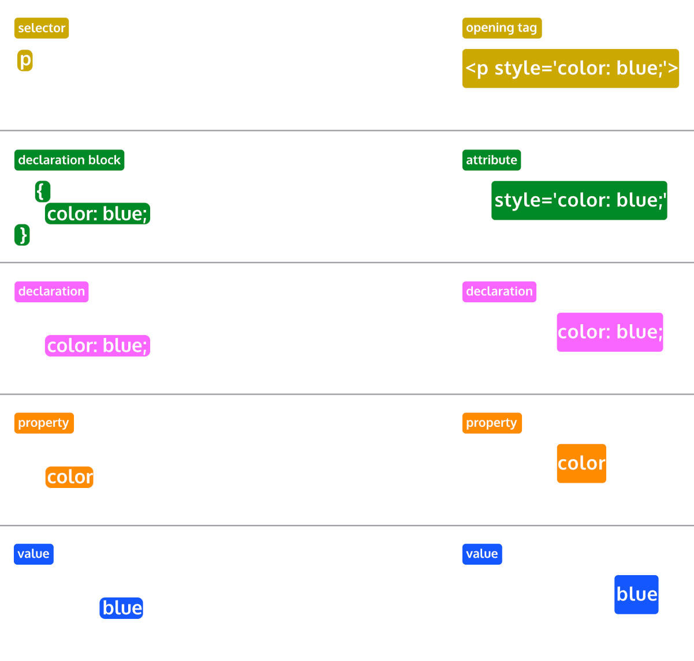

✨ Inspect the Code and Open the Console to See What's Happening ✨
Git bash commands
git status -> returns what branch I am in
ls -> lists everything in the directery i am in
cd -> changes directer to what ever is typed
git pull origin main -> updates me to the current
git push origin 'branch-name' -> will push all changes in the
staging area to github for a push request
sometimes you have to use a '-' instead of a space
git checkout 'branch-name' -> switches branches
adding a -b before the name creates a new branch
git add -a -> stages all changes to added to last commited???
git commit m-"message of changes made" -> commits
commits are a snap shot of a project at a given time. They are added
to the current branch you are on
pwd -> displays current working directory
start -> opens
mkdir -> creates a file in a directory
touch -> creates file in directory
cd .. -> goes back a level
git branch -> lists all branches
HTML
Enter your HTML notes here
Follow the semantics of HTML
Semantics provide context as to what is inside the tag
head - contains metadata, style, link, script, title and more
main - contains visible content on the webpage
Header
Body
Footer - contains elements such as contact information,
section vs article
articles make sense on there own, everything needed from start to finish is in the element
sections make sense within the current frame work the element works, for example a homepage could have different sections
aside - enhances the content but is not required to understand it
figure - used to encapsulate media mentioned in the main document
figcaption - used within the figure element along side the img element and the src tag with in the img opening tag to add text to an image. Text gets grouped with image.
nav is specific for navigation links
dont forget audio elements
audio elements use source to encapsulate the audio link
Attributes
contorls - display the audio controls
src - specifies the url
type - declares the type of audio file
autoplay - yes you guessed it
Video element
not self enclosed
similar attributes to audio
controls
loop
src
embed is a legacy element but i find it useful for inserting gifs
Start code with !DOCTYPE then declare the document type. Ex. html
Parent and child framwork is used to describe nested elements
Semantic elements are better for SEO, accessibility and readability
than basic 'div'
semantics are very important when writing code because they create
order
Attributes are added in the opening tag and are critical for
elements like images
an image alt ="" is an accessibility feature that displays text when
the image is not loaded or is accessesby by accessibility softwar
image src ="" is how the image sorce is linked into the code
some elements dont need a closing tag, for example images doent need
a closing tag
A margin indicates how much space we want around the outside of an
element
A padding indicates how much space we want around the content inside
an element
class="card" has class attributes applied to it by the class
selector .
a is the tag used for anchors, these are used to enbed hyperlinks in the text. href attribute is used to add the link in the opeing tag
anchors can be text or images. As long as the image or text is
wraped by and anchor elememnt it will behave as an anchor
Anchors can be used to direct users to different parts of the
sight.
Whitespace and indentation makes code easier to read
comments are made by using !-- followed by -- tags, this can be a useful technique to deactivate code with out deleting it
Two very common Global attributes class and id
When using headdings
Do not skip ex. from h1 to h3
Do not use headers to resize font. Instead use CSS font-size
Only one h1 per page
Tables
The table element creates a table.
The tr element adds rows to a table.
To add data to a row, you can use the td element.
Table headings clarify the meaning of data. Headings are added
with the th element.
Table data can span columns using the colspan="" attribute.
Table data can span rows using the rowspan="" attribute.
Tables can be split into three main sections: a head, a body,
and a footer.
A tables head is created with the thead element.
A tables body is created with the tbody element.
A tables footer is created with the tfoot element.
All the CSS properties you learned about in this course can be
applied to tables and their data.
CSS

CSS Anatomy
Selectors
Type
type selector matches the type of element in the HTML
ex. p element, line element
universal selector * selects elements of anytype
Class
When working with HTML and CSS a class attribute is one of the most common ways to select an element
dont for get the . when using class selectors
Elements can have multiple classes like me. I was made bold and green with multiple classes and internal stylesheet
I am styled with id selector using an internal stylesheet,
class uses # in the .css and id uses . before the selector when creating a ruleset. just look in the html for this web page
elements can only have one id attribute and the id element can only be used once per page
Attribute
Attribute selectors allow us to select based off which attributes are present and the contents of the attribute. We can be as broad as we like and select all href attributes or be more specific and only select href with a specific string in the value
This link to a list of attributes is light blue because a attribute selector made it that way. Notice the brackets in the code and seemingly arbitrary inclusion of the element. I think the including the element increases specificity.
Pseudo-class
allows the apperance of elements to change after interaction
ex. when you click a blue link on a page and it turns purple
Ex of psuedo classes = :focus, :visited, :disabled, :active
Using a assigning and id and using a psuedo class selector to enable hover feature on the above link
Specificity
CSS can select HTML elements by their type, class, and ID
Specificity is the order by which the browser decides which CSS styles will be displayed. Best practice is to go from least specific to most specific
ID is most specific, then classes and finaly type
To make styles easy to edit, its best to style with a type selector, if possible. If not, add a class selector. If that is not specific enough, then consider using an ID selector.
Chaining
If an html element has two or more CSS selectors at the same time they are combined into a chain.
Ex. h1.special - would be the selector for the special class of h1
Descendant Combinator
This list is colored red using a decendent combinator
decendents are nested elements in other html elements
Nested elements can be selected by separating selectors with a space.
chaining increases specificity
More specific css selectors overrule more general selectors
Multiple Selectors
In order to make CSS more concise, it’s possible to add CSS styles to multiple CSS selectors all at once. This prevents writing repetitive code.
To do this the selectors are seprated with a , For ex. h1, .menu {...}
Visual Rules
font-family - aka font
CSS Anatomy
Ruleset terms
Selector - the beginning of the ruleset used to target the element that will be styled
Declaration Block - The code in-between (and including) the curley braces that conatins the CSS declaration(s)
Declaration - The group name for a property and value pair that applies a style to the selected element.
Property - The first part of the declaration that signifies what visual characteristic of the element is to be modified
Value - The second part of the declaration that signifies the value of the property
Inline Style terms
Opening Tag - The start of an HTML element. This is the element that will be styled
Attribute - The style attribute is used to add CSS inline styles to an HTML element/li>
Declaration - The group name for a property and value pair that applies a style to the selected element
Property - The first part of the declaration that signifies what visual characteristic of the element is to be modified
Value - The second part of the declaration that signifies the value of the property
Inline styling made me red
Internal stylesheets made me blue
inline style sheets can also be used in the head of the html doc
the perfered way to style is with external style sheet because it separates the CSS code separate from the html which keeps the code looking clean and free of repetition
.css files must be linked
link goes in the head section
href is the attribute used similar to the anchor element
rel - the is attribute describes the relationhsip between the html and teh css file. when linking to a stylesheet the value is stylesheet
Add you notes about css here!
CSS stands for cascading style sheets
Class selectors like .card are assigned CSS rules in the .css file
the . in .card desig nates this as a class selector
Element selectors target specific elements.
two other selectors are id and class
javascript
to connect script.js we need to add script src="./assets/script.js">
/script right before the closing body tag
Comments are make using /* with the comment being writen in the
middle of the these opening and closing tags */
if the comment does not contain breaks it can be writen behind //
scripts are called like links are for CSS, opening tag contains a src
= "" instead of href for the css file
varriables are named containers that store data
var declares a variable
var shape = "circle"
after declaring a varriable you can give it a value. This can be
done in the same line. ^^ circle is the value for shape ^^
scripts are writen at the bottom on the body of the html file
because code reads from top to bottom and we want to make sure all
the code is loaded befor running a script
Strings are writen within in ""
values can be numbers, strings, arrays, boolean and maybe more
Control flow is the order in which a computer executes code in a script
JavaScript reads code from top to bottom
Conditinoal statements and loops control the order in which coe is executed
If statements are one way to create a conditional statement
When the computer encounters an if statement in a JavaScript file, it will check to see if the condition that we provide is truthy
The strict equality operator (===) checks to see if two values are equal, and returns a Boolean result true if the values are equal and false if the values are not equal.
When creating an if statement, we provide one or more conditions for the computer to evaluate. If one condition is truthy, the computer will execute the code that we provide between curly brackets. But if the condition is not truthy, the code will not execute, interrupting the control flow. Interrupting the control flow in this way allows us to build apps that respond to a user's actions.
An array is a single variable that is used to hold a group of data. Arrays are typically used to hold data that is related in some way.
A single array can store different types of data, such as strings, numbers, and so on.
to access value in array array name and index need to be used. If just the name is used the entire array will be returned. Index number alows us to select individual data items in an array
the first item in any array has an index of 0, not 1
A for loop uses the predictable pattern of indices to perform a task on all the items in an array by allowing a single code block to be executed over and over.
A loop contains three key elements
first statement defines the starting point of the loop. x=0 starts at the first index in the array
Second statement is teh condition. The loop will run till the condition is met. As long as the varriable is less than the length of the array it will run. shapes.length the .lenght is added to the end of the varriable to denote its length. .length is an array property
Third tells the for loop what to do each time it completes a loop. This allows it to iterate each time it goes through a loop. in our example x++ is used so the value of x increases by one each time we go through the loop
To create a function, we use the function keyword, similar to how we used the var keyword to declare a new variable.
To call a function type the function name with the () into code. This will cause the function to be executed
Read-Me
Deployment is when we make a webpage live on the internet
At a minimum README needs a title and a short descritption eplaining the what, why, and how of the project